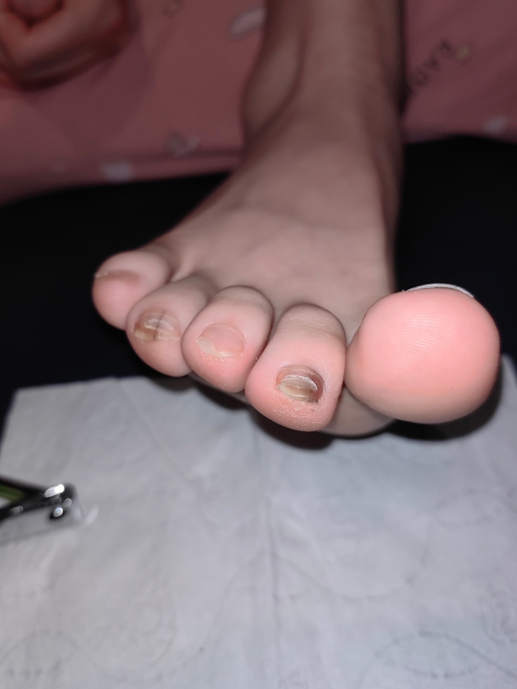
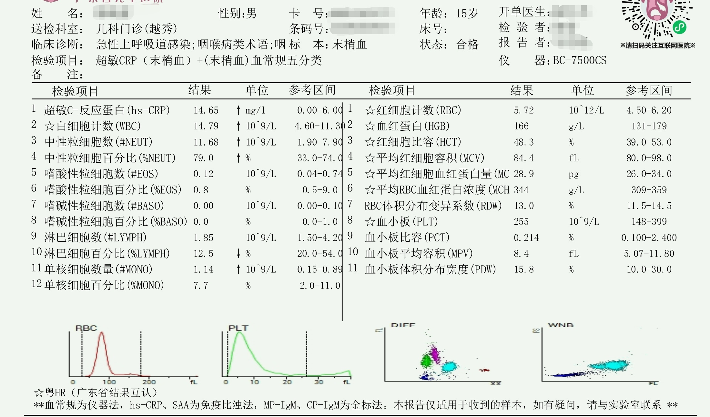

哥个人健康档案
就诊记录 · 检查报告 · 病情分析 · 共2份
健康档案时间线
脚趾甲情况

初三学生甲真菌病（灰指甲）诊疗与防护全指南
患者情况：初三男性学生，双足多枚趾甲受累
初步诊断：远端侧位甲下型甲真菌病（中度进展期）
核心原则：先确诊再规范治疗，外用为主安全优先，同步阻断传染防止复发
一、病情初步评估
从临床外观判断，两枚脚趾甲已出现黄褐色条纹变色、甲板浑浊不透亮、表面凹凸粗糙、指甲分层脆裂、甲下角质碎屑堆积的典型表现。目前处于中度进展期，尚未完全侵犯甲根，但如不干预，3-6个月内会扩散至大脚趾及其他趾甲，甚至传染至手指甲。
⚠️ 重要提醒：肉眼判断仅为初步参考，必须通过皮肤科真菌镜检确诊，切勿自行使用偏方或网购腐蚀性药水，以免损伤甲床造成永久指甲畸形。
二、广州权威医院与挂号指南
统一挂号科室
皮肤科/皮肤性病科（切勿挂骨科、外科或足病科）
权威医院优先级排序（华南地区）
| 梯队 | 医院名称 | 优势说明 | 地址 |
|---|---|---|---|
| 第一梯队（首选） | 南方医科大学皮肤病医院（广东省皮肤病医院·省皮） | 复旦榜华南皮肤科第1名，广东省皮肤性病质控中心，灰指甲规范化诊疗全省标杆，真菌检测设备最完善 | 白云区广园西路 |
| 第一梯队（首选） | 中山大学附属第三医院（天河岗顶院区） | 华南综合三甲皮肤科第2，真菌病亚专科实力极强，擅长久治不愈的顽固性甲癣 | 天河区天河路600号 |
| 第二梯队 | 南方医科大学南方医院 | 国家重点皮肤科，配备真菌耐药检测、激光辅助治疗设备 | 白云区广州大道北1838号 |
| 第二梯队 | 中山大学附属第一医院 | 广州综合实力顶尖三甲，常规诊疗稳妥可靠 | 越秀区中山二路58号 |
| 第二梯队 | 中山大学孙逸仙纪念医院 | 老牌感染性皮肤病强科，诊疗经验充足 | 越秀区沿江西路107号 |
| 第三梯队（就近） | 广东省人民医院、广州市第一人民医院、广医二院 | 市属正规三甲，适合轻症就近就诊 | - |
南方医科大学皮肤病医院（广东省皮肤病医院·省皮）最容易和 广州市皮肤病医院（广州市皮肤病防治所） 搞混的
这是另一家完全不同的医院，属于市级（广州市卫健委直属），不是省级的：
| 南方医科大学皮肤病医院 | 广州市皮肤病医院（广州市皮肤病防治所） | |
|---|---|---|
| 隶属 | 广东省卫健委 / 南方医科大学 | 广州市卫健委 |
| 级别 | 三甲（专科医院） | 市级专科医疗机构 |
| 地址 | 越秀区麓景路2号 | 越秀区恒福路56号（另有中山四路、黄埔院区） |
| 成立 | 1964年 | 1958年 |
| 年门诊量 | ~100万+ | ~80万+ |
| 特色 | 华南皮肤科「复旦榜」第1名、国家临床重点专科、全省性病/麻风防控中心 | 广州市皮肤病/性病防治网核心单位、院内制剂有特色 |
| 官网 | gdskin.com | gzpfs.com |
关键区分口诀：一个在麓景路，一个在恒福路——名字像但路都不一样。
就诊必做项目
- 真菌镜检：刮取少量甲下碎屑，显微镜下观察，5-10分钟出结果，费用约30元（确诊金标准）
- 肝功能检查：仅在医生评估需要口服抗真菌药时进行，空腹抽血，费用约50元
三、初三学生高发的特异性诱发原因
甲真菌病的根本原因是皮肤癣菌（主要为红色毛癣菌）感染甲板，初三学生的生活模式为真菌提供了绝佳的生存环境：
- 足部长期闷汗：每天久坐8-10小时+体育课+课后运动，足部出汗量是成年人的2-3倍；常年穿不透气的运动鞋，鞋内形成30-35℃、湿度>90%的"真菌培养箱"
- 指甲外伤：踢球、跑步时脚趾被踩伤、踢伤导致指甲出现微小裂纹，真菌直接侵入甲板内部
- 免疫力波动：熬夜复习、饮食不规律导致免疫力下降，指甲防御能力减弱
- 交叉感染：学校更衣室、公共浴室赤脚行走；共用拖鞋、指甲刀、擦脚巾；家人有脚气/灰指甲未同时治疗
- 不良卫生习惯：洗完脚不擦干趾缝；指甲剪得过短过深；有脚气但不治疗，真菌从皮肤蔓延至指甲
四、适合初三学生的个体化治疗方案
核心原则：外用为主，口服为辅，兼顾疗效与安全性，不影响学业和运动
第一步：快速确诊（周末完成，不耽误上课）
- 利用周六/周日上午就诊，当天即可完成检查并拿到药物
- 向医生清晰说明：发病时间、是否有脚气、是否有外伤史、家人是否有类似情况
第二步：分程度治疗
方案A：轻症（指甲边缘/表面受累，面积<1/3，无明显增厚）
最适合当前患者情况，纯外用，无肝肾负担
- 首选药物：阿莫罗芬搽剂（每周1次）或环吡酮胺乳膏（每日1次）
- 正确使用方法（关键，90%的人用错无效）：
1. 每周用药前，用指甲锉轻轻打磨病甲表面的增厚和变色部分（不要磨出血）
2. 用酒精棉片消毒病甲及周围皮肤
3. 均匀涂抹药物在整个病甲、指甲边缘和甲缝，自然晾干
- 疗程：6-9个月（趾甲每月仅长1-2mm，必须等健康指甲完全替换病甲才能停药）
- 辅助治疗：如有脚气，同步使用特比萘芬乳膏涂抹足部，每日1次，连续4周
方案B：中重症（受累面积>1/3，指甲明显增厚变脆或侵犯甲根）
口服+外用联合治疗，只要肝功能正常，短期服用安全
- 首选口服药：盐酸特比萘芬片，每日1次，每次250mg
- 疗程：脚趾甲连续服用12周（3个月）
- 安全监测：服药前和服药第6周各查1次肝功能
- 联合外用：同时使用阿莫罗芬搽剂每周1次，可缩短疗程提高治愈率
五、学生专属日常防护方案（比治疗更重要）
1. 鞋袜消毒（每天5分钟）
- 袜子：每天更换，开水烫洗10分钟后晾晒，单独清洗，不与家人衣物混洗
- 鞋子：准备3-4双轮换穿，每天换下的鞋子阳台暴晒4小时；每周用75%酒精喷雾喷洒鞋内
- 鞋垫：每周清洗暴晒一次，或使用一次性鞋垫
2. 足部卫生习惯
- 每天温水洗脚5分钟，洗完后用专用毛巾彻底擦干每个趾缝
- 指甲剪专人专用，剪指甲时保留1mm左右游离缘，不要剪得过短过深
- 绝对不要赤脚在学校更衣室、浴室、游泳池边行走
3. 运动与生活注意事项
- 运动后立即更换干燥的袜子和鞋子
- 穿合脚的运动鞋，避免脚趾被挤压或踢伤
- 脚趾受伤后及时用碘伏消毒包扎
- 保证充足睡眠，均衡饮食，提高免疫力
4. 家庭防护
- 家人如有脚气/灰指甲，必须同时治疗
- 家庭内拖鞋、擦脚巾、洗脚盆专人专用，定期开水烫洗消毒
- 不要与家人共用擦脚布，不要一起泡脚
六、常见问题解答
- 治疗期间可以正常上学和运动吗？
完全可以。外用药物不影响任何活动；口服药物期间也可以正常运动，只要避免过度劳累即可。
- 灰指甲会传染给同学吗？
只要不共用拖鞋、指甲刀、擦脚巾，不赤脚在公共区域行走，就不会传染给同学，无需过度自卑或隔离自己。
- 为什么用了药膏没效果？
90%的原因是疗程不够。很多人用了1-2个月看到好转就停药，此时真菌只是被抑制并未被杀死，很快就会复发。必须坚持到健康指甲完全长出。
- 需要拔甲吗？
现在已不推荐常规拔甲治疗。拔甲痛苦大、恢复时间长，且新长出的指甲仍可能被感染。只有在指甲严重畸形、甲下积脓的情况下才考虑。
七、就诊行动清单（本周即可执行）
- 提前1-3天在医院公众号预约皮肤科号源（优先选择周六上午）
- 就诊当天空腹前往（以防需要查肝功能）
- 携带物品：身份证、医保卡、既往病历（如有）
- 向医生说明："脚趾甲变色分层约X个月，无明显疼痛，有脚气/无脚气，家人有/无类似情况"
- 确诊后按医嘱开药，同时购买指甲锉和酒精棉片
- 回家后立即开始日常防护，同步治疗脚气
发烧腹股沟尿道肿胀肾结石
.png)
.png)
.png)
.png)

右肾3mm微小结石专属生活方式调整方案
（专为15岁青少年设计，核心目标：促进结石自行排出、防止结石增大、预防新结石形成）
一、核心饮水方案（最重要，决定结石能否排出）
1. 每日饮水量标准
- 基础量：每天保证 2000-2500ml 总饮水量（约4-5瓶500ml矿泉水）
- 感染期加量：当前合并细菌感染期间，可增加至2500-3000ml/天，同时有助于尿道感染恢复
- 换算参考：普通一次性纸杯≈200ml，保温杯≈500ml，每天至少喝10杯或5杯
2. 科学饮水时段（避免一次性猛灌）
| 时段 | 饮水量 | 作用 |
|---|---|---|
| 晨起空腹 | 300-500ml | 稀释夜间浓缩尿液，冲刷尿路 |
| 上午9-11点 | 500-700ml | 分多次饮用，保持持续尿量 |
| 下午2-5点 | 500-700ml | 全天尿量高峰时段，最利于排石 |
| 晚餐前30分钟 | 200-300ml | 避免餐后血液浓缩 |
| 睡前1小时 | 200ml | 防止夜间尿液过度浓缩（不要喝太多，避免影响睡眠） |
3. 饮水选择
- ✅ 首选：白开水、淡柠檬水（1片柠檬泡500ml水）、淡茶水（淡绿茶，避免浓茶）
- ❌ 严格限制：可乐、雪碧等碳酸饮料；奶茶、果汁、运动饮料等高糖饮料
- ❌ 绝对避免：浓茶、咖啡（每天不超过1杯）、酒精类饮品
4. 排石强化饮水法（每周1-2次，选周末进行）
- 上午9点开始，1小时内喝完1000ml白开水
- 休息20分钟后，进行跳绳或蹦跳运动15分钟
- 之后再喝500ml水，观察排尿时有无细小结石排出
二、精准饮食调整（针对最常见的草酸钙结石）
1. 无需忌口、鼓励正常摄入的食物
- 牛奶/酸奶/奶酪：每天300-500ml正常喝。误区纠正：适量钙摄入会在肠道与草酸结合，减少草酸吸收，反而能预防结石，青少年生长发育也需要充足钙
- 蔬菜水果：绝大多数蔬菜水果可正常吃，富含水分和膳食纤维
- 优质蛋白：鸡蛋、瘦肉、鱼肉等正常摄入，每天保证一个鸡蛋、100-150g肉类
2. 需要适量限制的食物（不是完全不吃，而是不要过量）
| 食物类别 | 具体食物 | 限制量 |
|---|---|---|
| 高草酸食物 | 菠菜、苋菜、空心菜、竹笋、茭白 | 每周不超过2次，每次不超过100g；吃前用开水焯烫3分钟，可去除70%草酸 |
| 高草酸零食 | 巧克力、可可、坚果（核桃、杏仁、花生） | 巧克力每周不超过1小块；坚果每天不超过1小把（约10g） |
| 高盐食物 | 咸菜、腌制品、加工肉类、外卖快餐 | 每天食盐摄入量不超过5g（约一啤酒瓶盖）；少用酱油、蚝油等含盐调味品 |
| 动物内脏 | 猪肝、牛肝、鸡肾等 | 每月不超过1次，每次不超过50g |
3. 应该避免的食物
- 各种含糖饮料、碳酸饮料（会显著增加尿钙排泄，促进结石形成）
- 油炸食品、肥肉等高脂肪食物
- 过咸的零食（薯片、辣条、方便面等）
三、促进排石的运动方案
1. 最佳排石运动（每天15-20分钟）
- 跳绳：原地双脚跳，每次100-200下，分3-4组完成，是最有效的排石运动
- 蹦台阶：双脚交替蹦下台阶（从2-3阶高度开始），每次10分钟
- 跑步：慢跑或快走，每次20分钟
- 篮球/羽毛球：跳跃较多的球类运动，每周3-4次
2. 运动注意事项
- 运动前一定要喝300ml水，运动中少量多次补水
- 避免剧烈运动后立即大量饮水
- 运动后排尿时注意观察有无细小结石排出（可能感觉有轻微刺痛）
- 感染期症状明显时，暂停剧烈运动，以散步为主
四、日常排尿习惯
- 绝对不要憋尿：有尿意立即排尿，憋尿会导致尿液浓缩，晶体沉淀形成结石
- 排尿要排干净：每次排尿尽量排空膀胱，不要中断
- 注意排尿卫生：当前尿道口炎症期间，排尿后用干净纸巾从前向后擦拭，保持尿道口清洁
五、定期复查与监测
- 首次复查：6个月后复查泌尿系彩超，观察结石大小和位置变化
- 后续复查：如果结石无变化或已排出，改为每年复查一次
- 复查前准备：复查前1小时喝500ml水，憋尿后检查，图像更清晰
六、需要立即就医的结石相关症状
虽然当前结石无症状，但如果出现以下情况，可能是结石掉入输尿管，需立即就医：
- 突发一侧腰腹部剧烈绞痛，疼痛向下腹部、大腿内侧放射
- 伴随恶心、呕吐、出冷汗
- 出现肉眼血尿（尿液呈粉红色或红色）
- 发热、寒战（提示结石合并感染）
七、重要提醒
- 这个3mm的结石90%以上可以通过上述生活方式调整自行排出，不需要吃任何排石药物，也不需要体外碎石或手术
- 青少年代谢能力强，只要坚持良好的饮水和饮食习惯，不仅能排出现有结石，还能有效预防未来再长结石
- 上述生活方式调整对当前的尿道感染和上呼吸道感染也有帮助，可同步执行
15岁男性患者病情综合分析报告
一、基本信息
| 项目 | 内容 |
|---|---|
| 患者姓名 | （已脱敏） |
| 性别 | 男 |
| 年龄 | 15岁 |
| 就诊科室 | 儿科门诊（越秀院区） |
| 临床主诉 | 咽喉不适、尿道红肿疼痛、腹股沟肿胀 |
| 完成检查项目 | 1. 末梢血血常规五分类+超敏C反应蛋白（hs-CRP）<br>2. 甲/乙型流感病毒抗原检测<br>3. 尿干化学11项+尿沉渣定量<br>4. 小儿泌尿系彩色多普勒超声检查 |
| 报告日期 | 2026年06月14日 |
二、核心诊断结论
- 急性细菌性上呼吸道感染（已排除流感病毒感染）
- 急性尿道口炎（表浅黏膜感染，未累及尿路深部）
- 双侧腹股沟淋巴结反应性增生（继发于局部黏膜感染）
- 右肾微小结石（3mm×3mm，无症状、无梗阻，偶然发现）
整体病情评估：轻中度全身性细菌感染，感染灶局限于咽喉部与尿道口黏膜表层，无深部泌尿生殖系统感染、无血液系统基础疾病、无尿路梗阻或肾损伤，规范治疗后预后良好。
三、各项检查结果汇总与专业解读
3.1 血液感染指标（血常规+超敏CRP）
异常指标汇总
| 检验项目 | 结果 | 参考区间 | 异常提示 | 临床意义 |
|---|---|---|---|---|
| 超敏C-反应蛋白（hs-CRP） | 14.65mg/l | 0.00-6.00mg/l | ↑ | 体内存在明确急性炎症反应，升高幅度提示轻中度炎症 |
| 白细胞计数（WBC） | 14.79×10^9/L | 4.60-11.30×10^9/L | ↑ | 机体免疫系统激活，提示细菌感染 |
| 中性粒细胞数（#NEUT） | 11.68×10^9/L | 1.90-7.90×10^9/L | ↑ | 细菌性感染的特异性指标，中性粒细胞是对抗细菌的核心免疫细胞 |
| 中性粒细胞百分比（%NEUT） | 79.0% | 33.0-74.0% | ↑ | 同上，感染越重，升高越明显 |
| 单核细胞数量（#MONO） | 1.14×10^9/L | 0.15-0.89×10^9/L | ↑ | 感染应激下免疫系统激活的辅助表现 |
| 淋巴细胞百分比（%LYMPH） | 12.5% | 20.0-54.0% | ↓ | 相对性降低，因中性粒细胞占比大幅升高挤占比例所致，非淋巴细胞本身减少 |
正常指标解读
红细胞系统（红细胞计数、血红蛋白、红细胞比容等）、血小板系统（血小板计数、血小板比容等）所有指标均在参考区间内，提示患者无贫血、凝血功能异常等血液系统基础疾病，当前血象异常为感染导致的一过性改变，感染控制后可自行恢复正常。
3.2 甲/乙型流感病毒抗原检测
| 检验项目 | 结果 | 参考区间 | 临床意义 |
|---|---|---|---|
| 甲型流感病毒抗原 | 阴性(-) | 阴性(-) | 排除甲型流感病毒感染 |
| 乙型流感病毒抗原 | 阴性(-) | 阴性(-) | 排除乙型流感病毒感染 |
解读：进一步确认上呼吸道感染的病原体为细菌而非病毒，与血液感染指标结果一致。
3.3 尿液检查（尿干化学+尿沉渣定量）
核心结果解读
- 尿路感染特异性标志物：白细胞酯酶、亚硝酸盐均为阴性；尿沉渣白细胞计数0个/μL（参考值0-16个/μL），完全正常
- 尿细菌计数：25.8个/μL（参考值0-488个/μL），在正常范围内，无细菌尿表现
- 肾功能相关指标：尿蛋白、尿潜血、尿葡萄糖、酸碱度、比重均正常
- 其他指标：红细胞、管型、真菌、结晶、上皮细胞等全部在参考区间内
专业结论：尿液检查完全正常，标本质量可靠（鳞状上皮细胞计数为0，无明显外阴污染），明确排除膀胱炎、肾盂肾炎等深部尿路感染，证明炎症仅局限于尿道口黏膜表层，未侵入尿液流经的尿路内部。
3.4 泌尿系彩色多普勒超声检查
检查所见
- 左肾：大小正常，肾实质回声均匀，肾窦部未见占位，肾盂肾盏未见扩张
- 右肾：大小正常，肾实质回声均匀，肾窦部见1个强回声光团，大小约3mm×3mm，肾盂肾盏未见扩张
- 双侧输尿管上段：未见扩张
- 膀胱：充盈佳，内未见异常回声
超声提示
- 右肾结石声像（3mm×3mm）
- 左肾、膀胱未见异常
- 双侧输尿管上段未见扩张
专业解读：
- 右肾3mm微小结石为本次检查的偶然发现，与当前尿道红肿、咽痛、腹股沟肿胀等症状无任何因果关系
- 结石体积微小，未引起肾积水、输尿管梗阻或肾实质损伤，无任何临床症状，不具备医疗干预指征
- 无尿路梗阻、肾积水征象，进一步排除深部尿路感染及尿路解剖结构异常
四、症状与检验结果的关联解读
4.1 腹股沟肿胀的本质
腹股沟肿胀为淋巴结反应性增生，是机体免疫系统对抗局部感染的正常生理应答。尿道及会阴部的淋巴液主要引流至腹股沟淋巴结，当尿道口黏膜发生细菌感染时，淋巴结会肿大以拦截和清除病原体。待局部感染控制后，肿大的淋巴结会在1-2周内逐步自行消退，无需针对淋巴结进行单独治疗。
4.2 两处感染的因果关系
不存在“尿道感染导致上呼吸道感染”的可能，最符合临床逻辑的发病机制为：
- 患者先发生急性细菌性上呼吸道感染，导致全身免疫力短暂下降
- 感染期可能伴随发热、饮水偏少，尿道黏膜局部抵抗力降低，原本定植于尿道口的正常菌群趁机突破黏膜屏障，引发表浅的尿道口炎
- 免疫力下降作为共同诱因，同时诱发了两个黏膜薄弱部位的细菌感染
4.3 为什么有尿道症状但尿常规正常
尿常规检测的是尿液中的成分，只能反映尿液流经部位（膀胱、输尿管、肾脏）的病变。当感染仅局限于尿道口黏膜表层时，炎症细胞和细菌不会进入尿液中，因此尿常规会表现为完全正常。这种表浅黏膜感染在青少年男性中较为常见，多与局部卫生状况不佳、包皮过长等因素相关。
五、治疗与护理建议
5.1 全身抗感染治疗（核心）
- 遵医嘱口服抗生素，所选药物需同时覆盖上呼吸道与尿道口常见致病菌（如链球菌、葡萄球菌等）
- 严格按疗程足量服药，不可因症状减轻就自行停药，避免感染残留、反复发作或产生耐药性
- 用药期间注意观察有无药物过敏反应，如出现皮疹、瘙痒、恶心呕吐等不适，立即停药并就医
5.2 对症治疗
- 发热、咽痛、尿道疼痛明显时，可按需服用对乙酰氨基酚或布洛芬缓解症状
- 若尿道口红肿疼痛持续明显，可在医生指导下配合外用抗菌药膏局部涂抹，加快局部炎症消退
5.3 局部护理（尿道口炎重点）
- 每日用温水清洗外阴1-2次，清洗后用干净软布轻轻擦干，保持局部干燥清洁
- 穿宽松透气的棉质内裤，每日更换，避免穿紧身牛仔裤等不透气衣物
- 多喝水、多排尿，每日饮水量建议1500-2000ml，通过尿液冲刷尿道口辅助排出病菌
- 避免搔抓红肿部位，防止皮肤破损继发感染
5.4 右肾微小结石相关生活方式调整
- 无需药物或手术治疗，日常保证充足饮水，避免长期憋尿
- 减少高草酸食物（如菠菜、苋菜、巧克力、浓茶）的过量摄入
- 适当增加运动，如跳绳、跑步等，有助于微小结石自行排出
- 半年到1年复查一次泌尿系彩超，观察结石大小及位置变化
六、随访与预警指标
6.1 常规随访
- 感染症状：服药后2-3天体温应逐渐恢复正常，咽痛、尿道红肿疼痛逐步减轻
- 结石随访：6-12个月复查泌尿系彩超
- 若感染症状完全缓解，无需复查血常规和尿常规
6.2 需立即就医的预警情况
出现以下任何一种情况，请立即前往医院复诊：
- 持续高热超过3天不退，或体温超过39℃伴随寒战、头痛、全身酸痛
- 腹股沟肿胀快速加重，皮肤发红发烫、疼痛剧烈，或出现化脓破溃
- 排尿困难、尿道口出现大量脓性分泌物、肉眼血尿
- 出现腰痛、恶心呕吐、尿频尿急尿痛加重等症状
- 服药后出现严重药物过敏反应